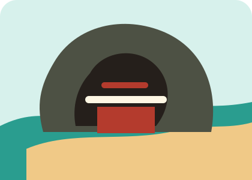
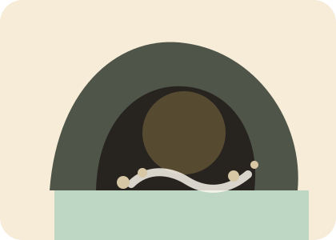

宿泊・拠点
1日目は熊本県八代市福正町の実家。2日目はHOTEL WINDY（そよ風パーク）に宿泊し、3日目は八代へ戻ってから熊本城へ向かいます。
🚗 自家用車・軽自動車👫 50代夫婦👵 2〜3日目前半は母参加
出発日を確認中…
1日目は熊本県八代市福正町の実家。2日目はHOTEL WINDY（そよ風パーク）に宿泊し、3日目は八代へ戻ってから熊本城へ向かいます。
しおりは「迷わないための軸」です。天候・道路・体調・混雑で、A/B案を切り替えます。
予約番号・代表者氏名は公開ページには載せません。詳細確認や遅れる連絡は宿へ直接。
所在地：〒861-3913 熊本県上益城郡山都町今297。コテージ【ファミリータイプ】和洋室 47㎡、1棟貸し素泊まりプラン。
チェックイン予定は17:00。可能時間は15:00〜20:00、遅れる場合は必ず宿へ電話。チェックアウトは5月28日10:00まで。
6:00出発。青島を10:30〜11:30に合わせ、にこにこショップと鵜戸神宮を優先します。


広川SA・山川PA・玉名PAなど。トイレと飲み物中心で、時間を使いすぎない。
休憩8:00八代出発。貸しボートなしで高千穂を回り、夕方は山都町のHOTEL WINDYへ向かいます。

コンビニおにぎり、飲み物、小さなお菓子を準備。朝は軽く済ませます。
雰囲気重視で訪問。階段・足元注意。お母さまの体力次第で途中まで、またはご夫婦だけ短時間。
歩行注意明るい時間宿を出発し、3人で八代市福正町へ戻って母を送ります。その後は夫婦で熊本城へ。
持ち込み朝食。必要なら本館大浴場を6:00〜9:00に利用。忘れ物、冷蔵庫、充電器を確認。
荷物を下ろし、母の体調と忘れ物を確認。ここから先は夫婦で熊本城へ向かいます。
旅終了。片付けは最小限にして休む。
迷った時の判断基準です。
公式情報、ルート、食事候補はリンク集ページにまとめています。
入力内容とチェックは、この端末のブラウザに保存されます。